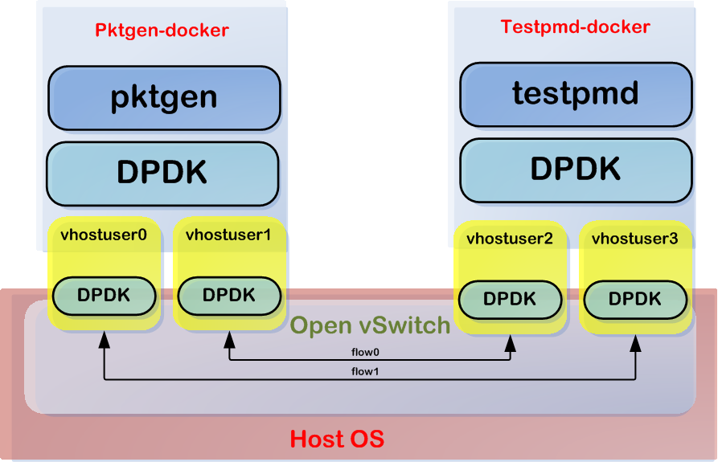

Docker+OVS-DPDK
创建容器
创建Dockerfile：
FROM ubuntu:18.04
WORKDIR /usr/local/f-stack
COPY . /usr/local/f-stack
RUN apt-get update && apt-get install -y libnuma-dev libssl-dev vim libpcap-dev
ENV PATH "$PATH:/usr/local/f-stack/dpdk/build/app/"
创建镜像：
docker build -t f-stack .
运行容器：
docker run -ti --privileged --name f-stack \
-v /mnt/huge:/mnt/huge \
-v /usr/local/var/run/openvswitch:/var/run/openvswitch \
-v /usr/local/lib:/usr/local/lib\
-v /usr/local/include \
f-stack
docker exec -it <ID> bash
链接动态库：
echo "/usr/local/lib/x86_64-linux-gnu" >> /etc/ld.so.conf && ldconfig
测试ovs-dpdk和docker
参考：https://blog.csdn.net/me_blue/article/details/78589592

第一次测试
| thread | cpu-mask | 0000 | 备注 |
|---|---|---|---|
| dpdk-lcore-mask | 0x1 | 0001 | |
| pmd-cpu-mask | 0x1 | 0001 | |
| pktgen | 0x6 | 0110 | master-lcore = 1 |
| testpmd | 0xA | 1010 | master-lcore = 1 |
先在第一个容器中运行pktgen，在第1、2端口上发包和收包：
pktgen-21.02.0/build/app/pktgen -c 0x6 --master-lcore 1 -n 1 --socket-mem 1024 --no-pci --vdev 'net_virtio_user1,mac=00:00:00:00:00:01,path=/var/run/openvswitch/vhost-user1' --vdev 'net_virtio_user2,mac=00:00:00:00:00:02,path=/var/run/openvswitch/vhost-user2' -- -T -P -m "2.0，2.1"
在第二个容器中运行testpmd，进行包转发4<->3：
./dpdk/build/app/dpdk-testpmd -c 0xa --master-lcore 1 -n 1 --socket-mem 1024 --no-pci --vdev 'net_virtio_user3,mac=00:00:00:00:00:03,path=/var/run/openvswitch/vhost-user3' --vdev 'net_virtio_user4,mac=00:00:00:00:00:04,path=/var/run/openvswitch/vhost-user4' -- -i
设置pktgen中的发包数量：
set 0 count 10000000
set 1 count 10000000
str
结果：
Total Rx Pkts : 9998848 9998816
Tx Pkts : 10000000 10000000
丢包率为0.01%
第二次测试：测试pmd线程公用lcpu
| thread | cpu-mask | 0000 | 备注 |
|---|---|---|---|
| dpdk-lcore-mask | 0x1 | 0001 | |
| pmd-cpu-mask | 0x1 | 0001 | |
| pktgen | 0x6 | 0110 | master-lcore = 1 |
| testpmd | 0x6 | 0110 | master-lcore = 1 |
结果：
Total Rx Pkts : 113152 113184
Tx Pkts : 10000000 10000000
丢包率为99%
testpmd的统计：
---------------------- Forward statistics for port 0 ----------------------
RX-packets: 209440 RX-dropped: 0 RX-total: 209440
TX-packets: 195840 TX-dropped: 10336 TX-total: 206176
---------------------- Forward statistics for port 1 ----------------------
RX-packets: 206176 RX-dropped: 0 RX-total: 206176
TX-packets: 200000 TX-dropped: 9440 TX-total: 209440
----------------------------------------------------------------------------